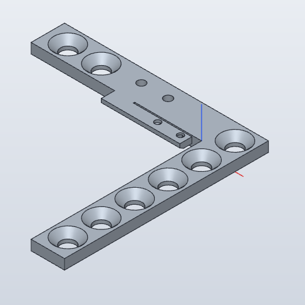
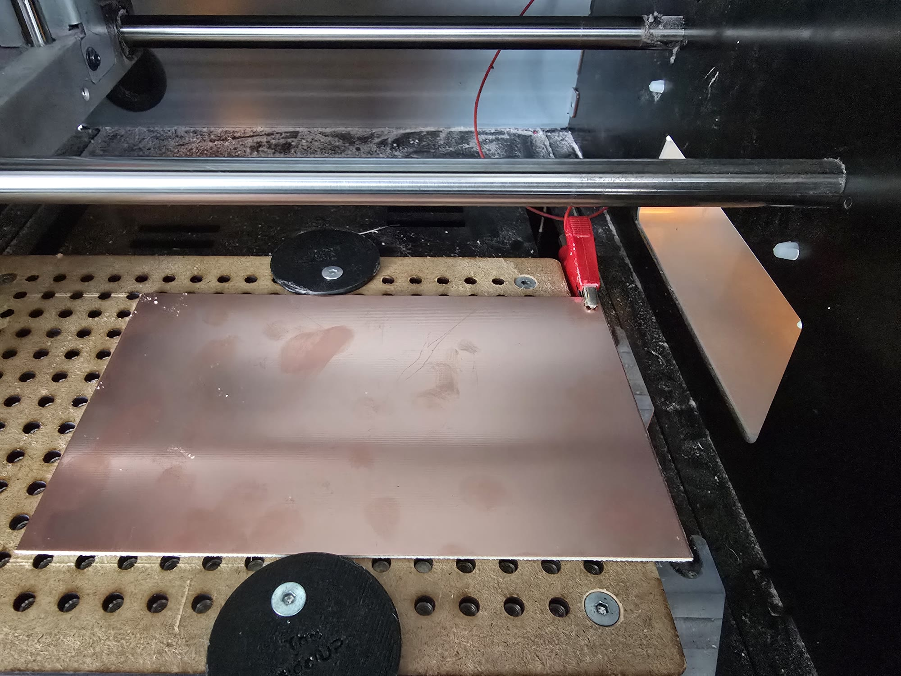

Holding the copper
For the run, the sheet sits in the corner bracket on the mill's bed. The bracket holds two edges and tells SRM-CAM where the sheet is; you hold the other two edges down. If clamps are on the sheet, mark them so the bit keeps clear.
The corner bracket
An L screwed to the bed (the lab's is in the back-right corner). The sheet is pushed into its inside corner, copper up. A short probe tongue on the back arm reaches 4 mm over the sheet's edge; the run keeps the bit clear of it. Because the corner is known, you only type in the sheet's size (W and H), and the run touches the copper once to find its height.

hardware/probe_bracket). Screws go through the countersunk holes into the bed.- CleanBrush the bed and the bracket's corner: a chip under the sheet tilts it.
- In the cornerSlide the sheet under the tongue and push it firmly into the corner, copper up.
- Hold the free edgesSee below. Then press on the copper near the middle: if it moves, the bit will move it too.
- Tell SRM-CAMOn the run page, type the sheet's W and H. Check the bracket's corner and kind match the bed (The mill page).
A newer bracket with a pogo pin in place of the tongue is a concept only, not in the lab: Concept: a probe bracket with a pogo pin.
The two free edges
What has worked in the lab, as tried so far:
| Sheet | Hold it with |
|---|---|
| Small (80 × 42 mm worked) | Clamps on the two free edges. |
| Big (160 mm) | Clamps, and masking tape stuck under the sheet, across the middle too. Three layers worked. |
- The clamps are the lab's printed cam clamps: a 26 mm disc on one screw, the screw off centre. Fit one loosely in a bed hole beside the free edge, push it round by hand until it presses the sheet into the corner, then tighten: its flat lip lies 2 mm over the copper. Don't push hard: that can bow the sheet. Print them from Hardware & firmware.
- Tape under a big sheet keeps its middle from lifting.
- Flat enough? The run measures it: a sheet more than 1.0 mm out of flat is refused ("Re-tape the stock flat").
Mark a clamp (no-go zone)
Clamps sit where the bit and the probe may go: the surface touches are 2 mm in from the board's edge. So mark each clamp: on the run page press Mark a clamp (no-go zone), then click the bed hole the clamp is screwed into. SRM-CAM draws the clamp there, turned onto the sheet's nearest edge. Drag on the bed instead to mark a box (tape, a tool, anything else).
- Right-click a zone to delete it; Clear zones removes them all.
- Zones are not kept when SRM-CAM closes: mark the clamps again each session.
- If the zones leave too few surface points free, the run stops and says so: move a clamp off the board's area.
Pro: without the bracket
In Pro the run page has Anywhere - the probe finds its corner instead of In the corner bracket. Drag the board on the bed to where the copper is; the probe starts in its middle, walks out to the copper's edges, and measures where the sheet is, how it is turned and how big it is. A size that does not match the one typed stops the run with the measured size filled in. No-go zones need the bracket.
Everything below is the by-hand way of Milling a board by hand, where you type the sheet's corner yourself.
Hold it down by hand
Without the bracket there are two holds. Pick one, then tell SRM-CAM which, under : it decides whether the cut is deepened (below).
Double-sided tape
Lay double-sided tape across the whole back of the board and press it flat onto the spoilboard. It is the easiest to set up, and because the whole back is held, nothing can arch: the probed surface is the surface that gets cut. In SRM-CAM: , which adds no extra depth. It is the default.
Four disc clamps
- Beside the board, not through itEach clamp is a plastic disc with a chamfer round its side. Put its screw through a spoilboard grid hole just beside the board's edge, into the threads of the metal plate underneath.
- Turn it inTurn the disc until its chamfered side presses on the board's edge, pushing it down and in.
- One on every sideUse all four: the clamping force has to come from all sides, or the board slides away from the open side.
- Tell SRM-CAM. A board held at its edges can arch in the middle, so the cut is deepened a little (below).

Tell SRM-CAM where the copper is
Under : the board thickness from calipers, then the sheet's width and height. Then its front-left corner. Find the corner with the probe (the walk is on Milling a board by hand), leave the bit there, and press Set the corner from the tool. It only reads the machine's X and Y: nothing moves, and the work origin is not touched. Then Centre, on the bed's toolbar, puts the job in the middle of the part of the sheet the spindle can reach.
Centre centres on the copper once the sheet's size and corner are set. Before that it centres on the bed: the middle of the machine's travel, which on a sheet clamped off to one side is bare spoilboard. Ctrl+Z puts the job back where it was.
A board held at points gives under the cutter
Clamped at its edges, the board can arch over air between the clamps. The probe measures that arch with a static tool at almost no force; the cutter arrives spinning and pushing down, and the unsupported part gives a little instead of being cut. So, held at points, SRM-CAM deepens the cut:
- Screwed or clamped at points, with the probe map applied: a quarter of the arch the map shows (what a flat, tilted plane cannot explain), capped at 0.12 mm, plus the 0.035 mm copper foil. The number is on the setup page.
- The map not applied: nothing cancels the tilt, so the whole range of the map is charged, plus the foil. Apply the map.
- Bonded across the whole back (tape): there is nowhere for it to go, so nothing is added.
Untick to set Cut deeper by yourself, down to nothing, if the board keeps coming out too deep or too shallow. How to measure the map is on Bed levelling.
Check it before you cut
With the link connected, turn on Click to jog and click the board's corners on the bed. The head lifts and goes there: look that the bit is over the copper at each one. If it is not, find the corner again and re-place the job. A minute, before every job.
In Pro, the run can do this for you: with the stock set to Anywhere - the probe finds its corner, the probe walks out to the copper's edges and measures where the sheet is and how it is turned. See Pro: without the bracket.
Which one do I need?
| Situation | Use |
|---|---|
| Any board, by hand | Double-sided tape across the back; set the corner from the tool, probe the bed, check the corners with Click to jog |
| No tape to hand, or the board won't stay taped | Four disc clamps, one per side, and probe the bed so the extra depth is measured rather than guessed |
| Double-sided | Dowel registration: see Double-sided by hand |
screws the copper down through the board: Write the screw file… drills clearance holes in the copper over the spoilboard grid, and raises the lift to 4 mm to clear the screw heads. drills dowel-pin holes into the spoilboard. Both procedures have you set the XY work origin, which the lab rule (X and Y stay at the machine origin) does not allow. Use tape or the disc clamps instead.
When you are done, leave the machine as you found it: Leave it as you found it.